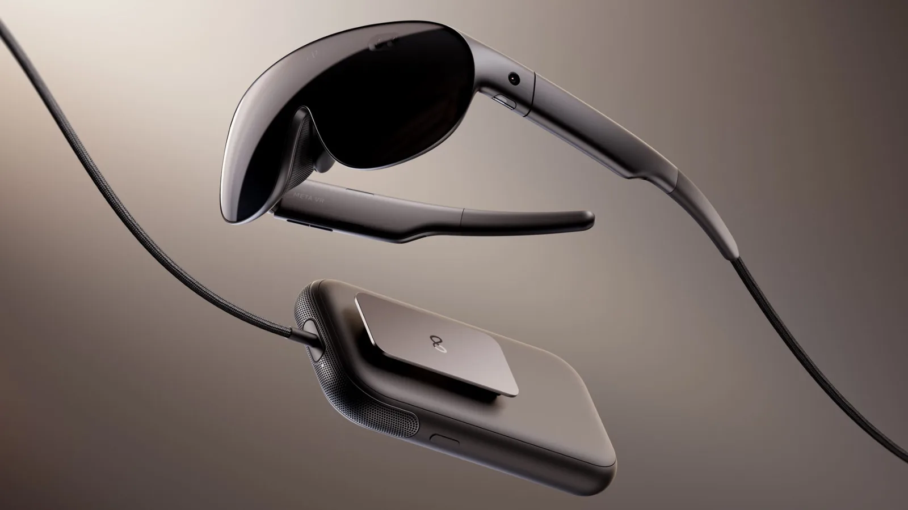

Luiso · 24 de septiembre de 2026
Meta presentó durante Meta Connect 2026 uno de sus proyectos más ambiciosos para la realidad virtual: Meta VR Glasses, unas gafas que buscan llevar la experiencia de realidad virtual a un formato mucho más parecido al de unos anteojos convencionales.
El dato que más llama la atención es su peso: aproximadamente 100 gramos, lo que, según Meta, las convierte en un dispositivo unas cinco veces más liviano que Meta Quest 3.
La reducción se consigue mediante un diseño dividido en dos partes. Los lentes contienen los sensores y las pantallas, mientras que la batería, el almacenamiento y el procesamiento están ubicados en un módulo externo que puede llevarse en el bolsillo, sujeto al cinturón o dentro de una bolsa.
Meta VR Glasses utilizan una pantalla 5K Infinite Display basada en paneles micro-OLED, con 37 píxeles por grado. El dispositivo también incorpora lentes tipo pancake y compatibilidad con Dolby Vision y Dolby Atmos.
La compañía plantea el dispositivo no solamente como un visor para videojuegos. También pretende utilizarlo como cine personal, espacio de trabajo virtual y plataforma de computación espacial.
El usuario podrá generar múltiples pantallas virtuales y ampliar las imágenes de otros dispositivos, mientras que la interacción podrá realizarse mediante seguimiento ocular y gestos de las manos, sin necesidad de utilizar controles tradicionales.
Aunque Meta presentó las gafas como una plataforma de uso general, los videojuegos también forman parte de la propuesta.
La compañía anunció que Beat Saber recibirá en 2027 su mayor actualización hasta la fecha, con una nueva experiencia denominada Flux, basada en seguimiento de manos. La actualización llegará tanto a Meta VR Glasses como a Meta Quest.
Además, Meta apunta a utilizar el dispositivo como una plataforma de entretenimiento inmersivo, con películas 3D y eventos deportivos en realidad virtual.
Las Meta VR Glasses están previstas para la primavera de 2027 en Estados Unidos, con un precio anunciado de US$1.299,99.